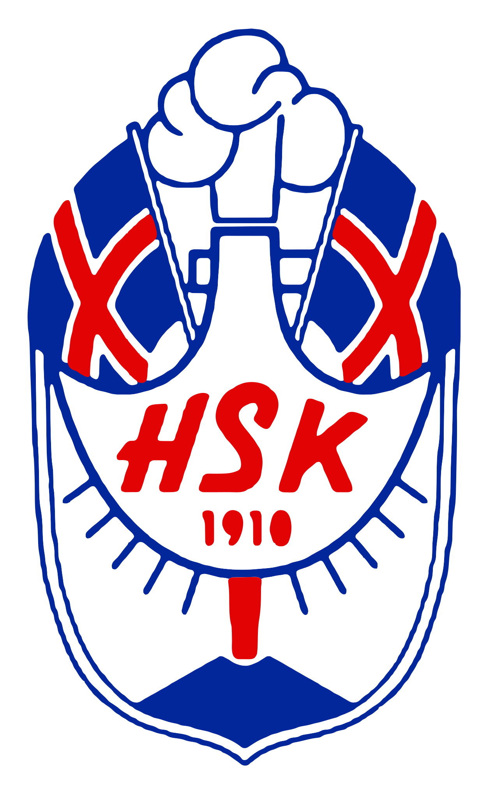

Nútímalegur og farsímavænn vefur fyrir hsk.is með eigin vefumsjónarkerfi. Starfsfólk HSK getur sett inn fréttir, uppfært síður og búið til nýjar undirsíður án aðstoðar. Allt efni núverandi vefs flyst yfir og gamlar slóðir halda áfram að virka.
Núverandi vefur keyrir á gömlu sérsmíðuðu ColdFusion-kerfi (web/default.cfm?page=…) á Apache-þjóni. Forsíðan er bara tilvísunarsíða sem sendir gesti áfram eftir eina sekúndu. Textinn er vistaður með gamla stafasettinu ISO-8859-1. Þar sem enginn aðgangur er að bakendanum verður allt efnið sótt beint af vefnum, síðu fyrir síðu.
Tölurnar eru áætlaðar út frá því hvernig efnið er númerað. Nákvæmur fjöldi kemur í ljós þegar efnið hefur verið sótt.
| Efni | Núverandi slóð | Í nýju kerfi |
|---|---|---|
| Fréttir og eldri fréttir | page=frettirnar&frett_id= | Fréttir með dagsetningu, mynd og flokkum |
| Greinar og aðsendar greinar | page=greinarnar, page=adsgr | Fréttir af tegundinni „grein“ með höfundi |
| Stakar síður | page=sidur&id=, page=hsk_uppl | Síður í veftré með undirsíðum |
| Stjórn, nefndir og ráð | page=nefndirnar&id= | Nefndir með fólki og hlutverkum |
| Aðildarfélög | page=felogin&id= | Skrá yfir félög með tengiliðum og vefslóð |
| Lög og reglugerðir | page=login&id= | Síður undir „Lög og reglugerðir“ |
| Fundargerðir | page=fundargerd&grein= | Fundargerðir eftir flokki og ári, með PDF-skjölum |
| Úrslit héraðsmóta | page=urslitin | Úrslit eftir íþróttagrein og ári |
| Mótaskrá og viðburðir | page=motaskra, page=vidburdir | Sameiginlegt dagatal fyrir mót og viðburði |
| HSK met og sögulegur fróðleikur | page=hsk_met1 | Metaskrár sem töflur sem hægt er að uppfæra |
| Styrktaraðilar og samstarfsaðilar | Merki á forsíðu | Styrktaraðilar með merki, vefslóð og röðun |
| Myndasöfn | myndir_yfirl.cfm?flokkur= | Myndaalbúm geymd í Cloudflare R2 |
| Skjöl og myndir í efni | web/img/…, myndir/… | Skráasafn í R2. Allar vísanir uppfærðar |
Ekki er hægt að breyta efni eða flytja það út með venjulegum hætti. Vefurinn er háður gömlum þjóni.
ColdFusion, jQuery-sleði og sprettigluggar. Gamalt stafasett veldur villum í íslenskum stöfum í sumum útdráttum.
Efni er dreift á margar síðugerðir og leit vantar. Sumar myndir í myndasafni eru brotnar, t.d. smámynd sem vísar á .lnk-skrá.
Vefurinn er með hvítum bakgrunni. Litirnir eru teknir beint úr merki HSK: blár fyrir fyrirsagnir, valmynd og fót, og rauður sparlega til áherslu, t.d. á dagsetningum og virkri valmynd. Fréttir eru efst, síðan koma næstu viðburðir, nýjustu úrslit og flýtileiðir. Styrktaraðilar eru neðst á öllum síðum.
Hvítur#FFFFFF · bakgrunnur
HSK-blár#01279A · fyrirsagnir, fótur
HSK-rauður#E20404 · áherslur
Texti#16203F · meginmál
Ljós flötur#F2F5FB · kassar, töflur

Efnið í sýnishorninu er tekið af núverandi forsíðu hsk.is í dag. Á farsíma raðast allt í einn dálk og valmyndin fer í hamborgarahnapp.
Sex aðalflokkar í stað margra ótengdra síðugerða. Allar síður eru í einu veftré í vefumsjónarkerfinu, svo hægt er að færa þær til, endurraða þeim og bæta við undirsíðum að vild.
Vefurinn og vefumsjónarkerfið verða eitt verkefni á Cloudflare, með kóðann í GitHub-safninu fridriksi/hsk. Engan þjón þarf að reka og kostnaður við hýsingu verður lítill sem enginn fyrir vef af þessari stærð.
Keyrir vefinn með Hono. Síður eru búnar til á netþjóni og vistaðar í skyndiminni svo þær hlaðast hratt.
Geymir fréttir, síður, viðburði, úrslit, félög, nefndir og notendur.
Geymir myndir, PDF-skjöl og myndaalbúm. Myndum er breytt í rétta stærð sjálfkrafa.
Innskráning fyrir starfsfólk, ritill fyrir texta og myndir, drög og útgáfa, og breytingasaga.
Hver efnistegund hefur sitt svæði í vefumsjóninni með formi sem passar efninu. Allt sem er skráð birtist sjálfkrafa á réttum stöðum á vefnum, t.d. á forsíðu, í dagatali og á síðu viðkomandi íþróttagreinar.
| Svæði | Hvað er hægt að gera | Hvar það birtist |
|---|---|---|
| Fréttir og greinar | Skrifa, setja inn forsíðumynd og myndir í texta, vista drög, tímasetja birtingu og birta. | Forsíða, fréttasíða, fréttasafn |
| Síður | Breyta hvaða síðu sem er og búa til nýjar undirsíður. Síðum er raðað í veftré með því að draga þær til. | Valmynd og veftré uppfærast sjálfkrafa |
| Viðburðadagatal | Stofna viðburð með heiti, dagsetningu og tíma, staðsetningu, lýsingu, mynd og tengli á skráningu. Hægt er að endurtaka viðburði og bæta þeim við eigið dagatal (iCal). | Forsíða (næstu viðburðir), dagatal með mánaðar- og listasýn |
| Mótaskrá | Skrá mót sem eru framundan: íþróttagrein, aldursflokkar, dagsetning, keppnisstaður, mótshaldari, skráningarfrestur og boðsbréf eða reglugerð sem PDF. | Mótaskrá eftir grein og mánuði, forsíða, dagatal |
| Úrslit móta | Tengja úrslit við mót í mótaskrá. Úrslit eru slegin inn sem tafla, límd inn úr Excel eða hlaðið upp sem PDF. Úrslitin verða leitanleg. | Úrslitasíða eftir grein og ári, „Nýjustu úrslit“ á forsíðu |
| HSK met | Uppfæra metaskrár eftir grein og aldursflokki. Saga eldri meta geymist. | Metasíður |
| Myndir og myndasöfn | Hlaða upp mörgum myndum í einu með því að draga þær inn, búa til albúm, raða myndum og skrifa myndatexta. Myndir minnka sjálfkrafa og eru birtar í réttri stærð. Hægt er að tengja albúm við frétt eða mót. | Myndasafn, fréttir, mótasíður |
| Styrktaraðilar | Bæta við styrktaraðila með merki, vefslóð og flokki (t.d. aðalstyrktaraðili eða samstarfsaðili), raða þeim og stilla gildistíma. | Merkjaborði neðst á öllum síðum og síða um styrktaraðila |
| Aðildarfélög | Merki félags, íþróttagreinar, tengiliðir, vefslóð og samfélagsmiðlar. | Félagaskrá með leit og síða hvers félags |
| Stjórn, nefndir og ráð | Fólk, hlutverk, myndir og netföng. | Um HSK |
| Fundargerðir og skjöl | Hlaða upp fundargerðum, ársskýrslum, lögum og eyðublöðum, flokkað eftir tegund og ári. | Skjalasafn og viðeigandi síður |
| Forsíða og tilkynningar | Velja hvaða frétt er efst, stjórna flýtileiðum og birta tilkynningaborða, t.d. „Opið fyrir umsóknir í Hvatasjóð“. | Forsíða |
| Notendur og samþykktir | Stjórnandi býr til aðganga og tengir formenn við sitt félag. Efni frá félögum fer í biðröð og stjórnandi samþykkir það eða hafnar því. Sjá „Aðgangur og hlutverk“ hér fyrir neðan. | Aðeins í vefumsjón |
Leitin nær yfir allt efni, líka gamlar fréttir og úrslit. Kerfið er byggt þannig að auðvelt er að bæta við nýjum efnistegundum síðar, t.d. sjálfboðaliðaskráningu eða umsóknum í sjóði.
Starfsfólk HSK skráir sig inn með @hsk.is-netfangi. Formenn aðildarfélaga skrá sig inn með Gmail eða öðru netfangi, en aðeins ef stjórnandi hefur boðið þeim. Enginn getur stofnað sér aðgang sjálfur.
| Hlutverk | Hverjir | Innskráning | Hvað má gera |
|---|---|---|---|
| Stjórnandi | Framkvæmdastjóri og starfsfólk HSK | @hsk.is-netfang | Allt: breyta öllu efni, birta, samþykkja eða hafna efni frá félögum, bjóða og fjarlægja notendur |
| Ritstjóri | Annar starfsmaður eða sjálfboðaliði HSK | @hsk.is-netfang | Búa til og birta fréttir, viðburði, mót, úrslit og myndir. Má ekki stýra notendum |
| Félagsaðgangur | Formenn og tengiliðir aðildarfélaga | Gmail eða annað netfang, aðeins með boði | Uppfæra upplýsingar um eigið félag. Senda inn fréttir og viðburði til samþykktar. Getur ekki birt neitt sjálfur og sér ekki efni annarra félaga |
Verkefni á Cloudflare Workers, D1 og R2 sett upp, og forsíða og síðusnið smíðuð. Prufuvefur á *.workers.dev.
Innskráning, ritill, fréttir, síður með veftré, myndir og myndasöfn, og styrktaraðilar.
Forritið sem sækir efnið keyrt, efnið hreinsað og flutt inn, og samanburðarskýrsla gerð.
Viðburðadagatal, mótaskrá, úrslit, met, félagaskrá, nefndir og fundargerðir.
Starfsfólk HSK prófar vefinn, tilvísanir eru settar upp og lénið hsk.is er tengt við Cloudflare.
| Atriði | Niðurstaða |
|---|---|
| Innskráning | Starfsfólk með @hsk.is-netfangi. Formenn aðildarfélaga með Gmail eða öðru netfangi, eftir boði, og með takmarkaðan aðgang. Efni frá þeim þarf samþykki stjórnanda. |
| Enska | Ein einföld ensk síða. |
| Lénið hsk.is | Ákveðið síðar. Prufuvefur keyrir á *.workers.dev á meðan. |
Eru til góðar myndir úr starfi HSK sem má nota efst á forsíðu? Annars eru myndir úr myndasafni núverandi vefs notaðar.
Merki HSK hefur verið endurteiknað sem vektormynd (SVG) og er í assets/merki/. Ekki er vitað hvar @hsk.is-netföngin eru hýst, svo innskráning verður bæði með Google og með innskráningartengli í tölvupósti. Það virkar sama hvar pósturinn er.